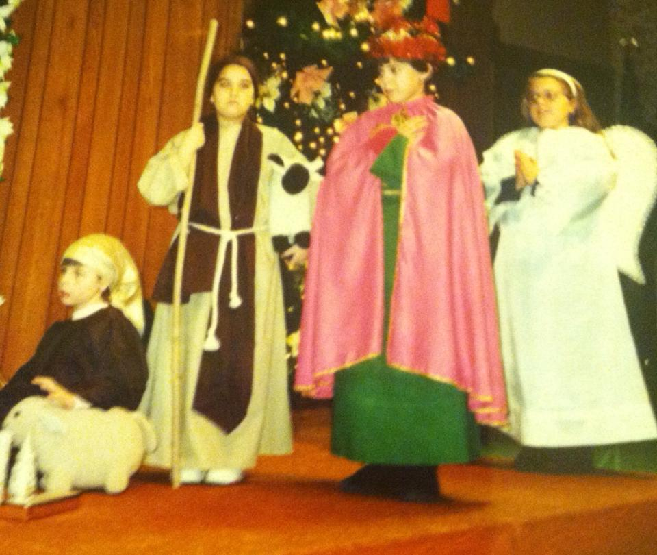

Monday, Fourth Week of Advent
Psalm 96; Zephaniah 3:8-13; Romans 10:5-13
Reflection by Renee Beauregard Lute
In my third grade Christmas pageant, I was cast as one of the three wise men. That was not the role I wanted. It was a step up from the shepherds, sure, but it was no angel, and it was certainly no Virgin Mary. I felt like a mistake had been made, somewhere. Maybe Sister Janice hadn't fully thought out her decision. Maybe she'd overlooked my obvious dramatic flair, or maybe she'd been bribed. (In retrospect, of course, I am certain she had not been bribed.) I felt so much disappointment, and it only got worse when we had our dress rehearsal. Our Virgin Mary wore a silky powder blue gown and a creamy white veil that flowed to her elbows. I wore a scratchy green robe, a Pepto-Bismol pink cape, and a crown made of cardboard and red tinsel garland. Mary was glorious. I was a mess.
When Sister Janice appeared to my classmate and announced that she was going to be our Virgin Mary, my classmate was stoked. This is a different scenario than the one we see in Luke. Actual Mary was troubled. This was not what she'd envisioned for herself, any more than the tinsel garland crown was what I envisioned for myself. But she took the job, because she had faith that God knew better than she did.
We all have a vision for our lives, and expectations for how things are going to turn out. When they don't turn out the way we'd hoped, it is so easy to mentally check out. It's easy to spend the whole pageant pouting under our Pepto-Bismol capes. But then we'd really be missing something, because the music is lovely, and there's a fun kind of camaraderie with the other two wise men. Or, less specifically, with the people who are sharing our unexpected and unplanned journey. With our families, and with the community at St. Michael's.
“I am the Lord's servant,” Mary answered. “May your word to me be fulfilled.”
